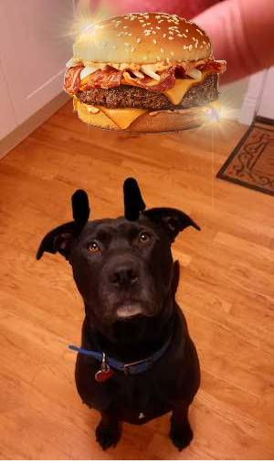
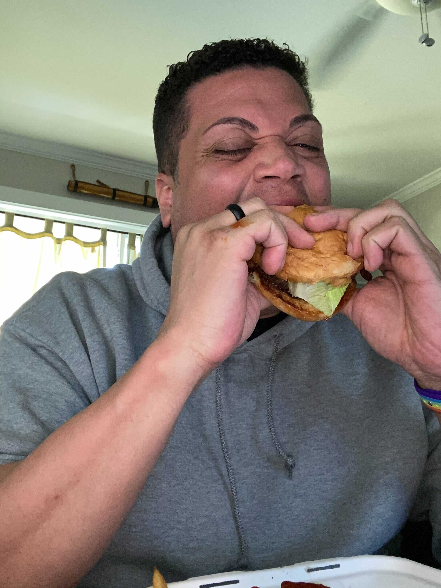
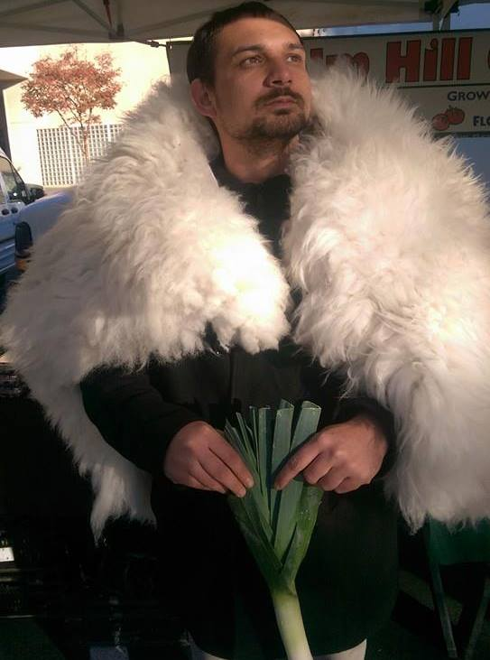

Our Puntastic Crew!
Lucky
Owner Operator
Not a burger leaves the restaurant that he hasn't personally tasted. His favorite burger is the UPS Special.
Jason Dormier
My core skill sets are design process and software development. I’m always looking for new things to learn, and ways to improve. I love the idea and challenge of making systems more efficient, whether it is software using fewer resources, using the design process to improve the development cycle or even my own health. I’m looking to join a software development team to utilize my skills in programming, design process, and project management.
Anthony Johnson
I’m Anthony Johnson, AJ for short. I come from a background of helping people and working in a team environment, most recently as an LEO. I changed careers due to the fact that other software engineers that I know personally said I have the mindset for this work, and I have enjoyed it thus far. I want a career I can grow with, without too much stagnation, with so much out there, I feel like this will be a great fit. I’d love to work in a team where there are different levels of experience, I feel that’s one of the best ways to learn and grow. I spent years in the navy as an IT, working with complex systems and communication tools, which I feel will lend itself to my understanding this work easier.
Glenn Clark
Hi, I am Glenn Clark, He/Him and am a software development student at Code Fellows. I am a former marine and my latest job was as a ballroom instructor. A friend of mine from college successfully transitioned into Tech from Code Fellows and she inspired me to become a developer as well. I am someone who is always looking to learn new skills and always looking for new perspectives on old ones. As a jr developer I am looking for a position with experienced developers who I can continue learning from.
Lauren Sierra

Before looking into software development, I was working as a phlebotomist and was considering a career in the medical field. At the time my Boyfriend, Glenn, was looking into coding boot camps. The more he kept telling me about being a software developer, the more I liked what I heard. When I initially looked at code, I thought that there was no way I could learn how to understand it, let alone enjoy it. Since then, I have enjoyed learning and strategizing how to write the most user friendly version of the code I write as possible. Now my ultimate goal is to apply my skills in a team setting that values efficiency, sustainability and growth.